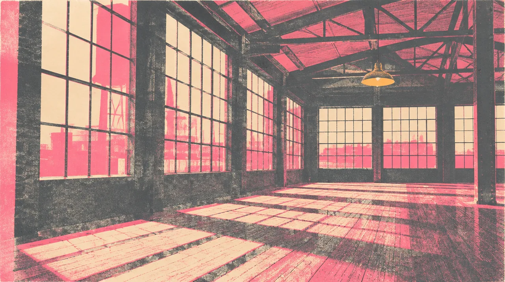

MUSIC · SEP 27 · San Francisco
THE FOUNDRY
A dance today. Our own gathering next.
4 days out
- When
- Sun Sep 27, 2026
- Where
- 1425 Folsom, San Francisco
In the mix
A Sunday stop during Folsom
I plan to stop by The Foundry during Folsom Sunday and get a feel for the venue that will host both of our March GGP events. The fair is its own chapter, with Shannon Murray. No separate Foundry meetup time is set.